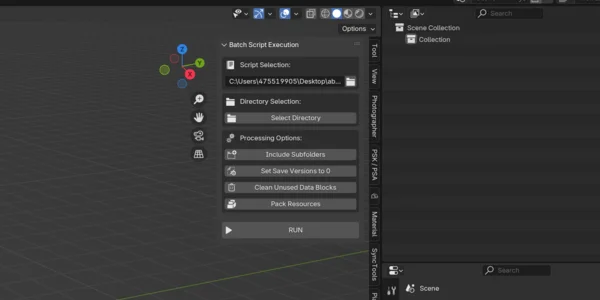
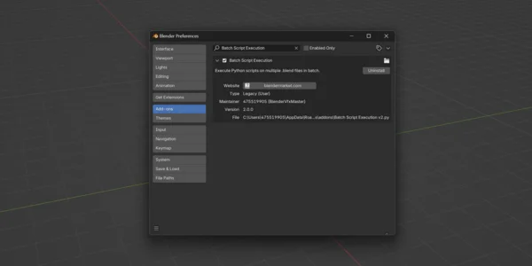
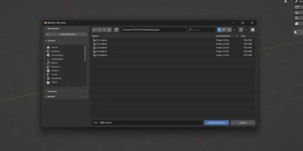
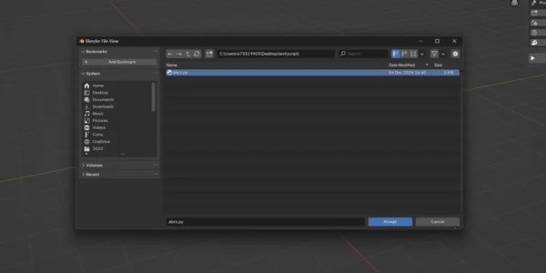
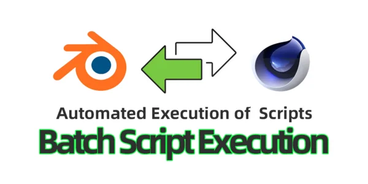
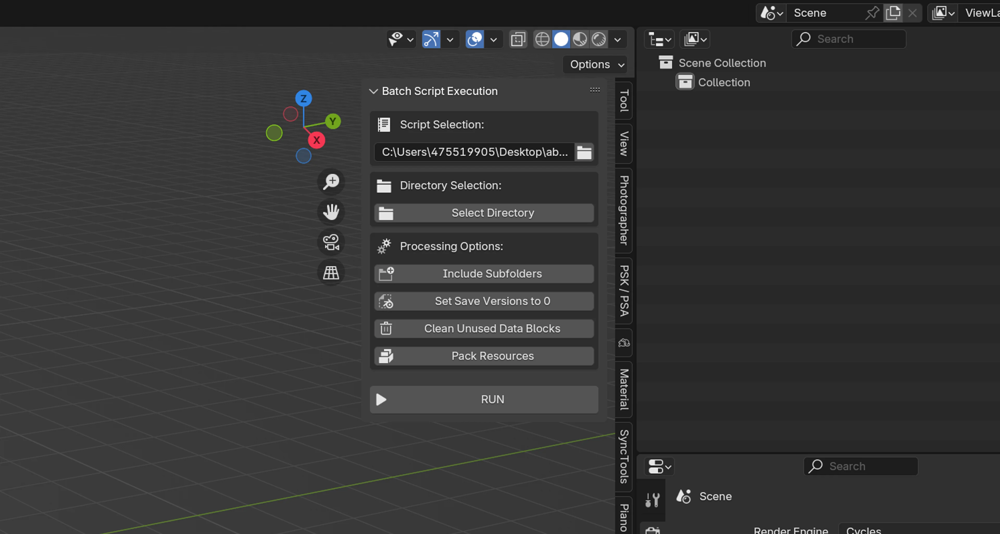
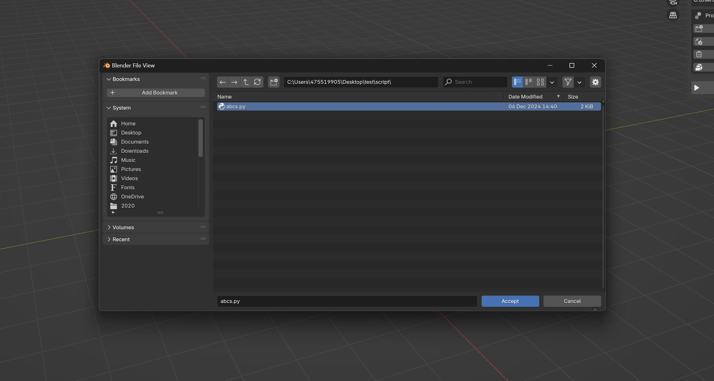
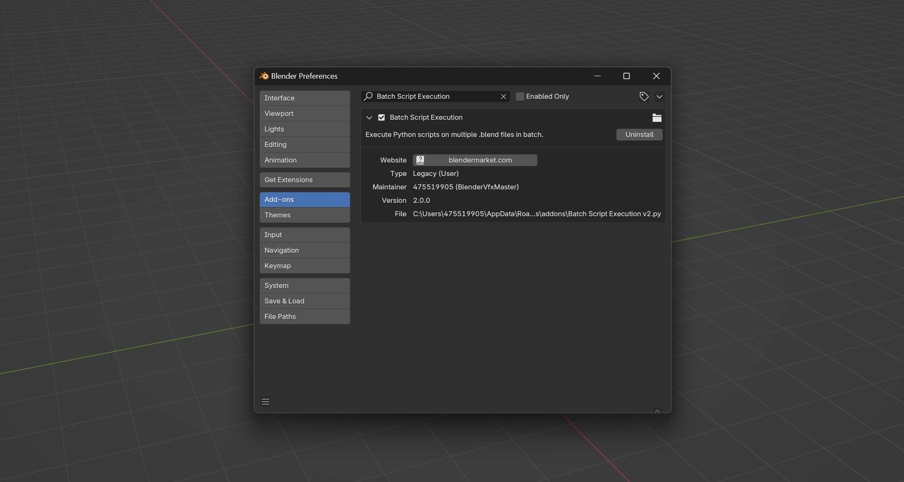

Blender Batch Execution Tools
$5.00相册






产品信息
描述
描述
"Blender Batch Execution Tools" 是一款旨在简化工作流程的插件，可在单次批量处理中对多个 .blend 文件运行指定的 Python 脚本。无需手动打开和编辑每个文件，您现在可以自动化该过程，快速高效地将相同的修改应用到整个目录的 .blend 文件。
核心功能
- 批量执行脚本： 自动对多个 .blend 文件运行自定义 Python 脚本，无需手动干预。
- 可选子文件夹包含： 轻松处理子文件夹中的所有 .blend 文件。
- 保存版本开关： 可选将保存版本计数设为 0 以避免创建备份文件。
- 清理未使用数据： 高效移除所有未使用的数据块，保持 .blend 文件整洁。
- 打包外部资源： 自动将所有外部文件打包到每个 .blend 中，确保文件完整性和可移植性。
实际应用场景：
- 批量渲染： 使用统一设置自动过夜渲染多个 .blend 文件。
- 批量重命名： 即时重命名多个项目中的对象或材质，保持一致的命名规范。
- 统一场景设置： 一次性将标准化的场景设置、材质或纹理应用到所有 .blend 文件。


安装
- 下载 ZIP 文件： 购买后，下载提供的
.zip文件（例如batch_script_execution.zip）到您的电脑。 - 通过偏好设置安装：
- 在 Blender 中，前往
编辑 > 偏好设置... > 插件. - 点击
安装...按钮并选择已下载的.zip文件。
- 在 Blender 中，前往
- 启用插件：
- 安装后，在插件列表中搜索 "Blender Batch Execution Tools"。
- 勾选复选框以启用插件。

使用说明
打开面板：
- 在 3D 视口中，按
N打开侧边栏。 - 导航到 "Scripts" 标签页找到 "Blender Batch Execution Tools" 面板。
- 在 3D 视口中，按
选择脚本文件：
- 在 "Script Selection" 下，选择要对 .blend 文件执行的 Python 文件。
选择目录：
- 点击 "Select 目录" 找到包含 .blend 文件的文件夹。
- 如需要，启用 "Include Subfolders" 以处理所有嵌套目录中的 .blend 文件。
设置可选偏好：
- 将保存版本设为 0： 禁用备份文件。
- 清理未使用数据块： 移除所有未使用的数据块。
- 打包资源： 将所有外部资源包含在 .blend 中。
运行批量处理：
- 点击 "RUN" 按钮开始处理。
- 插件将对每个 .blend 文件执行选定的脚本并自动保存更新后的文件。
监视进度：
- 关注 Blender 控制台或系统终端以查看进度日志，包括已处理的文件数量和所用时间。
文档 & 支持
- 文档与创作者页面：https://blendermarket.com/creators/blender-vfx-master
- 如有问题、反馈或建议，请通过创作者页面联系我们。我们随时欢迎您的意见和建议。
更新与兼容性
- 当前版本： 2.0.0，已在 Blender 3.6 上测试。
- 未来更新将确保与新版本 Blender 的兼容性，并根据用户反馈改进性能和增加新功能。
以上信息帮助用户快速了解如何安装、配置和使用 Blender Batch Execution Tools 插件，使其更容易集成到工作流程中。
支持 Blender 基金会
文档
安装指南
下载插件
在 Blender Market 购买插件后，下载.zip文件到您的电脑（例如batch_script_execution.zip).打开 Blender 偏好设置
在 Blender 中，前往 编辑 > 偏好设置... 并点击左侧的 插件 标签页。安装插件
点击 安装... 按钮（位于偏好设置窗口顶部）。
找到之前下载的.zip文件并选择它。
点击 安装插件。启用插件
安装完成后，在插件列表中搜索 "Batch Script Execution"。
勾选其名称旁边的复选框以启用它。
关闭偏好设置窗口。
您的插件现已安装完成并可以使用。
使用教程
打开面板
切换到 Blender 的 3D 视口。按 N 打开侧边栏。
导航到 Scripts 标签页，在那里您会找到 "Batch Script Execution" 面板。选择 Python 脚本
在 "Script Selection" 框下，选择要对多个.blend
文件执行的脚本。该脚本可以修改对象、材质、渲染设置或您创建的任何自定义逻辑。选择目录
点击 "Select 目录" 选择包含.blend文件的文件夹。- 如果您的
.blend文件存储在子文件夹中，请启用 "Include Subfolders" 以同时处理它们。
- 如果您的
配置选项
从可用选项中选择以定制您的批量处理：- 将保存版本设为 0： 不会创建备份版本 (
.blend1,.blend2）。 - 清理未使用数据块： 自动移除场景中未使用的数据块。
- 打包资源： 将所有外部文件（纹理等）打包到每个
.blend文件。
- 将保存版本设为 0： 不会创建备份版本 (
运行批量处理
一切设置好后，点击 "RUN" 按钮。
插件将打开每个.blend文件（在选定的目录及子目录中，如果已启用），运行选定的 Python 脚本，然后自动保存文件。监视进度
控制台或终端窗口（如果已打开）将显示进度，包括已处理的文件数量和所用时间。
完成后，将出现一条消息显示已处理的文件总数。
提示与最佳实践
- 先在单个文件上测试： 在批量处理大量文件之前，先在单个
.blend上运行脚本以确保其按预期工作。 - 备份重要文件： 虽然您可以将保存版本设为 0，但在运行批量操作前请考虑保留重要文件的备份。
- 检查控制台错误： 如果有任何异常，请打开 Blender 控制台（
窗口 > 切换系统控制台，Windows 上）以查看脚本的错误消息或打印语句。
按照上述步骤，您可以快速将 "Batch Script Execution" 集成到工作流中，在需要对多个 .blend 文件进行批量处理时节省大量时间。
产品文件
- Batch_Script_Execution.zip(4.3 KB)